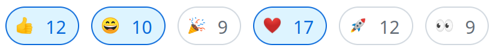

1. (55 min) What's new in ClickHouse 24.4.
2. (5 min) Q&A.
ClickHouse April Release.
— 13 new features 🌸
— 16 performance optimizations 🐦
— 65 bug fixes 🦋
:) DROP TABLE hello, world;
:) DROP TABLE hello, little, bobby;
Developer: ZhongYuanKai.
:) SYSTEM UNLOAD PRIMARY KEY db.table
Allows to free memory for the table's primary key,
which makes sense when the table is rarely used.
It will be loaded on demand during the next query from this table.
Developer: Pablo Marcos.
• _block_offset: the row number inside the original block;
• _block_number: the original block number;
• _part_data_version: version of data mutations;
These columns are enabled by settings:
:) CREATE TABLE ... ENGINE = MergeTree
SETTINGS enable_block_number_column = 1,
enable_block_offset_column = 1;
Demo.
Developer: Anton Popov.
:) SELECT now64(9) AS t, dateTrunc('millisecond', t)
┌─────────────────────────────t─┬─dateTrunc('millisecond', t)─┐
1. │ 2024-04-30 09:19:12.277723765 │ 2024-04-30 09:19:12.278 │
└───────────────────────────────┴─────────────────────────────┘
Developer: Misz606.
$ cat /etc/clickhouse-server/config.d/table_engines.yaml
access_control_improvements:
table_engines_require_grant: true
:) GRANT TABLE ENGINE ON TinyLog TO vasya;
:) GRANT TABLE ENGINE ON * TO petya;
For compatibility, all engines are allowed by default.
Enable granular control as above.
Developer: Shichao Jin.
https://example.clickhouse.cloud/?role=hello
— equivalent to SET ROLE 'hello'; before running the query.
https://example.clickhouse.cloud/?role=hello&role=world
— equivalent to SET ROLE 'hello', 'world';
Developer: Serge Klochkov.
OpenSSL -> LibreSSL -> OpenSSL -> BoringSSL -> OpenSSL
2016 -> 2018 -> 2019 -> 2020 -> 2024
For what?
Developer: Robert Schulze.
Demo
Developer: Alexey Milovidov.
Demo
Developers: Alexey Katsman.
SELECT *
FROM l JOIN r ON l.id = r.id
WHERE l.id = 123
SELECT *
FROM l JOIN r ON l.id = r.id
WHERE l.id = 123 -- AND r.id = 123
Propagates conditions across tables for push-down.
Supports INNER, LEFT, and RIGHT JOINs. Demo.
Developer: Maksim Kita.
If there is a condition ensuring that the joined record is found.
SELECT *
FROM l LEFT JOIN r ON l.id = r.id
WHERE r.value != '' -- this allows the optimization
SELECT *
FROM l INNER JOIN r ON l.id = r.id
WHERE r.value != ''
Developer: Maksim Kita.
When few fields are read.
Demo
Developer: lgbo-ustc.
Keep Alive and Connection Pools for S3
— in previous versions, connections were established
more often than needed;
— now the workload is spread among all S3 endpoints' IP addresses;
— it monitors error rate on every address and adjusts the load;
Developer: Sema Checherinda.
Allow to recursively run a subquery over result of itself.
Works for tree and graph traversal.
Standard SQL.
WITH RECURSIVE t AS (
SELECT 1 AS x
UNION ALL
SELECT x + 1 FROM t WHERE x < 10)
SELECT * FROM t
Demo
Developer: Maksim Kita
We imported tests from PostgreSQL. They work :)
WITH RECURSIVE search_tree AS (
SELECT id, link, data
FROM tree t
WHERE t.id = 0
UNION ALL
SELECT t.id, t.link, t.data
FROM tree t, search_tree st
WHERE t.link = st.id
)
SELECT * FROM search_tree;
But it is better than in PostgreSQL!
Developer: Maksim Kita
:) SELECT * FROM uk_price_paid
WHERE toYear(date) = 2023
QUALIFY price > (quantile(0.9)(price) OVER ())
LIMIT 10
Filtering on the values of window functions.
Standard SQL.
Developer: Maksim Kita
99 bugs are fixed by a single change.
Developers: Maksim Kita, Nikolai Kochetov, Dmitriy Novik,
Vladimir Cherkasov,
Igor Nikonov, Yakov Olkhovskiy, ...
s3_plain_rewritable disk type.
Does not have any metadata on the local filesystem
— relies only on object storage (S3).
Supports all operations except hard links.
Suitable for non-replicated MergeTree tables,
without mutations, ALTERs, or partition manipulations.
The main use-case: system tables on S3.
Developer: Julia Kartseva
Fivetran — ClickHouse Cloud destination is available in private preview:
https://fivetran.com/docs/destinations/clickhouse
It provides 400+ data sources for easy import!
dbt connector now supports TTL:
Improvements for OTel exporter, Kafka connector, PowerBI,
Java and Node.JS drivers.
Tableau: 862 out of 873 (99%) tests are passing from the official test suite.
— https://adsb.exposed/ real-time ✈️ air traffic visualization and analysis;
— How Langchain uses ClickHouse;
— How to train models with Featureform and ClickHouse;
— K-means clustering ClickHouse;
— Alibaba Cloud is launched in GA;
— Building observability on ClickHouse and saving millions;
— How Didi replaced Elasticsearch and inserts 40 GB/sec of logs;
— New SQL console in ClickHouse Cloud;
— How to not get lost while chaining materialized views;